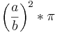
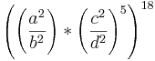

De: La Frikipedia, la enciclopedia extremadamente seria.
De: La Frikipedia, la enciclopedia extremadamente seria. De: La Frikipedia, la enciclopedia extremadamente seria.
Agujero de gusano, término válido para todo portal de Stargate, agujero negro supermasivo,patada anal a lo bestia o brecha espaciotemporal que manda al carajo espacio todo el lío ese del Space-Time Continum o comosellame, establecido por Einstein y demás psicópatas de la Física. Se llaman así porque son creados por un gusano cuántico gigante que atraviesa el universo como si fuera de cartón pintado (véase Teoría del Cartón Pintado en Reposo)
| De la serie animales y otros bichejos: | ||
| ||
| Nombre común: | El aujéro 'e lombri | |
| Nombre científico: | Cuantix Gusan Hoyo | |
| Especie: | Oscúrico | |
| Subespecie: | MásOscúrico | |
| Alimentación: | Lo que atrae, traga | |
| Apariencia: | Mancha negra en forma de gusano | |
| Hábitat natural: | La casa de Ud. o bien, el Espacio Sideral | |
| Localización: | Universos A, B, sucursal clausurada en el C | |
| Número aproximado de ejemplares: | muchos | |
| Fecha de extinción: | Dios sabrá | |
| Pokemonización: | No tiene, véase Teorema de Inpokemonización | |
En todos los casos, el agujero de gusano es creado por un gusano cuántico, es decir, un espíritu de un gusano muerto en algún videojuego de la serie Worms. La clasificación que rige para los aujéros es la siguiente:
Se trata de objetos celestes (no, no de color celeste idiota. ¿Pasaste tercer grado?) que agujerean este universo (y otros) para atrapar gente que mandan a la mierda y que, al volver, cuenta todo en programas del canal Infinito y pasa por drogada o loca, o ambas (son jodidos los bichos). Miden 10 m y se usan en el mundo de la TV (específicamente, con los malos guionistas). Los agujeros de gusano son usados por gente como el Dr. Who
 donde A es igual al número de segundos desde la aparición del aujéro, B la cantidad de mililitros cúbicos de espaciotiempo deformado y Pi es... bueno, Pi.
 Lo anterior debería resultar en el punto de entrada segura al agujero, partiendo de que el punto superior izquierdo del agujero de gusano en cuestión (no me diga que no puede encontrar el punto superior izquierdo en el espacio) es el inicio de dos ejes cartesianos X e Y invertidos respecto a los normales, el resultado es un número infinito, asegúrese de ser preciso al ir hacia el agujero o será apachurrado en un parpadeo.
 (¿Fácil, no?)
(¿Fácil, no?)
Multiplique el resultado de todo lo anterior por todos los números del 1 al 118, sume cada nuevo número y al resultado de dicha suma divídalo por el total de números que se sumaron, elevado a la quinta. El resultado será el 1,3% de energía necesaria para destruir un aujéro, así que use regla de tres simple y luego divida el resultado siete veces por el mismo número (204), y a eso le resta los números de Lost (primero al revés y después en orden) y el resultado debería ser igual a la patente del auto de su vecino.
Autor(es):